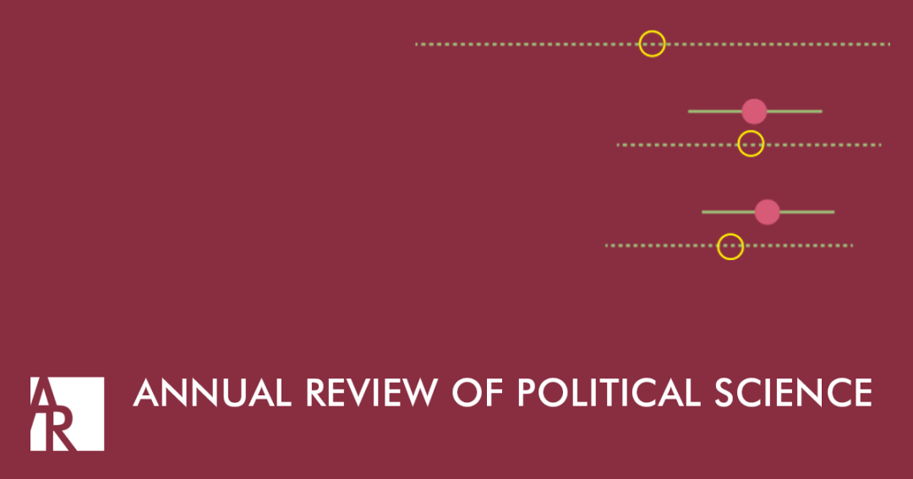

收录于合集
期刊简介 : 《政治学年鉴》（Annual Review of Political Science）自1998年出版以来，其内容涵盖了政治学领域的重大进展，包括政治理论和哲学、国际关系、政治经济学、政治行为、美国和比较政治、公共管理和政策以及方法论等。根据 Journal Citation Reports显示，其2018年的影响因子为3.915，在176种政治科学类期刊中排名第6位（6/176）。
期刊目录
20. 冲突的后果：理解政治冲突和暴力的后果
21. 整合文武关系的研究
22. 贸易中的企业与贸易政治
23. 没有那么“公民”：种族民族主义和公民民族主义之间有差别吗？
24. 测量公平、不平等与大数据：阿罗依赖的社会选择理论
25. 美国的地方选举与代表
26. 全民基本收入的政治理论
27. 美国政治中的种族和威权主义
28. 更好的政府，更好的科学：循证政策运动所面临的承诺和挑战

20. 冲突的后果：理解政治冲突和暴力的后果
题目： The Consequences of Contention: Understanding the Aftereffects of Political Conflict and Violence
作者： Christian Davenport，密歇根大学政治学系教授；Håvard Mokleiv Nygård，奥斯陆大学和平研究所高级研究员；Hanne Fjelde，乌普萨拉大学和平与冲突研究系副教授David Armstrong，西安大略大学政治学系副教授
摘要： 冲突的政治经济后果是什么（例如种族灭绝，内战，国家镇压/侵犯人权，恐怖主义和抗议）？尽管定量研究对此有高度的研究兴趣，但是对这一议题的研究文献在各个领域仍然不充分不平衡。迄今为止，相关的研究一直集中在特定形式的冲突和特定后果上。尽管围绕这一议题的研究产生了一些重要的见解，但仍然具有巨大的局限性，因此也具有进一步突破的可能。特别是，有必要同时从更广泛的后果（超越民主和经济发展）、更广泛的冲突活动（不局限内战、抗争和恐怖主义）、更广泛的分析单位（超越国家）以及更广泛的经验方法（超越普通最小二乘法）进行研究，以此来应对可能受到的质疑。只有这样，我们才能更全面地了解冲突是否对政治经济产不产生后果。本文对现有的研究进行了总结，在此基础上提出了一种从更全面的视角切入进行研究的方法。
What are the political and economic consequences of contention (i.e., genocide, civil war, state repression/human rights violation, terrorism, and protest)? Despite a significant amount of interest as well as quantitative research, the literature on this subject remains underdeveloped and imbalanced across topic areas. To date, investigations have been focused on particular forms of contention and specific consequences. While this research has led to some important insights, substantial limitations—as well as opportunities for future development—remain. In particular, there is a need for simultaneously investigating a wider range of consequences (beyond democracy and economic development), a wider range of contentious activity (beyond civil war, protest, and terrorism), a wider range of units of analysis (beyond the nation year), and a wider range of empirical approaches in order to handle particular difficulties confronting this type of inquiry (beyond ordinary least-squares regression). Only then will we have a better and more comprehensive understanding of what contention does and does not do politically and economically. This review takes stock of existing research and lays out an approach for looking at the problem using a more comprehensive perspective.
21. 整合文武关系的研究
题目： Integrating the Civil–Military Relations Subfield
作者： 马凯特大学政治学系Allis Chalmers副教授
摘要： 近年来，围绕文武关系展开的研究经历了快速的复兴，并产生了许多有趣的研究发现。尽管这些研究的进展令人欣喜，但是它们仍然被不必要的划分到多个维度中去：比如，根据学科划分进行分析，比较政治、国际政治和美国政治学科对这一议题的研究存在交叉；并且文武关系是这些子学科中研究中的自变量或者因变量；根据区域/国别进行分析；根据政体类型（民主政体，民主化与威权政体）进行分析；以及通过规范与实证两种路径进行分析。本文旨在弥合现有的分歧并减少研究的碎片化。本文提出几种可能推进的途径，包括在演绎理论上进行创新，发展新的分析框架以及同步、调整经验结果。它还提出了超越文武关系领域研究的议题，例如关于全球民主倒退的现象、政治斗争非暴力战略产生的效应、军事效应以及国家间战争的起因和结果。
The subfield of civil–military relations has experienced a remarkable revitalization in recent years, yielding a wealth of intriguing insights. Yet, despite these auspicious developments, research remains unnecessarily divided across multiple dimensions: along the subdisciplinary boundaries of comparative, international, and American politics; within these subdisciplines by independent and dependent variables; by regional focus; by regime type analyzed (democratic, democratizing versus authoritarian); and by scholars' emphasis on normative versus positive analysis. This article aims to bridge existing divides and reduce fragmentation. It proposes several pathways forward, including proposing innovations in deductive theorizing, developing new analytical frameworks, and synthesizing and adjudicating empirical findings. It also suggests ways of bridging to research beyond the study of civil–military relations, such as that on the global phenomenon of democratic backsliding, the efficacy of nonviolent strategies of political struggle, military effectiveness, and the causes and outcomes of interstate war.
22. 贸易中的企业与贸易政治
题目： Firms in Trade and Trade Politics
作者： Song Kim，麻省理工学院政治学系助理教授；Iain Osgood，密歇根大学政治学系助理教授
摘要： 本文审视了研究在贸易政治中扮演主要角色的公司的相关文献。与主流方法不同，以企业为中心的模型预测，贸易会内分为不同产业，且大企业是全球化最积极的倡导者。这一新的偏好图式改变了现有的关于利益集团贸易竞争动态的预测，并对政治组织和政治制度如何促成一个开放的国际秩序的解释提出了修改意见。本文还探讨了对全球贸易体制运转、境外投资政治学、移民和资本流通及货币汇率提出新见解的可能性。企业参与的政治活动是国际政治经济学深入研究的重要领域：他们的经济活动直接影响全球范围内的商品、服务、资本和人员的流动。
We survey the literature on firms as primary actors in trade politics. In contrast with prevailing approaches, firm-centered models predict that trade internally divides industries and that larger firms are the strongest advocates for globalization. This new preference map alters extant predictions about the dynamics of interest group contestation over trade and suggests revised accounts for how political organization and institutions contribute to an open international order. We also explore the potential for new insights into the operation of the global trade regime, the politics of foreign investment, immigration and capital movements, and exchange rates. Political activities undertaken by firms are important areas for further research in international political economy: Their economic engagements directly affect the movement of goods, services, capital, and people across the globe.
23. 没有那么“公民”：
种族民族主义和公民民族主义之间有差别吗？
题目： Not So Civic: Is There a Difference Between Ethnic and Civic Nationalism？
作者： Yael (Yuli) Tamir，以色列申卡学院院长，牛津大学布拉瓦特尼克政府学院兼职教授。
摘要： 有些政治思想更能被纳入理论框架是有原因的。本篇文章分析了将民族主义去理论化的种种尝试，认为这些尝试主要发挥了三个作用：首先，它们使民族主义者免于将他们的主张普遍化以及随之而来的权利和义务。其次，它们允许反对民族主义的人认为民族主义在道德上不如其他政治观点。第三，它们导致一种特定形式的民族主义被挑选出来并合法化，这种民族主义是由道德原则驱动的。在被原始情感所激发的民族主义形式和被理性普遍原则所激发的民族主义形式之间划分的界线为区分种族民族主义和公民民族主义奠定了基础。虽然在理论上这是两种截然不同的民族主义形式，但在现实中它们的界限是模糊的。然而，公民民族主义的倡导者仍然保留着这种区别，希望与另一种形式的民族主义保持距离，并推动一种“无民族的民族主义”的愿景(有人会说这是一种妄想)。对西方民主国家已经超越了他们民族和种族（差异）的假定鼓励政客们忽视社会分裂，避免应对其后果。因此，在“公民”语境下的民族主义不仅在理论上是不准确的，而且也会在那些需要采取行动的地方引发回避行为。
There are reasons why some political ideas fit better into a theoretical framework than others. This article analyzes attempts to detheorize nationalism, arguing that they serve three major functions. First, they free nationalists from universalizing their arguments and from the ensuing rights and obligations. Second, they allow its rivals to present nationalism as morally inferior to other political standpoints. Third, they lead to the singling out and legitimization of one specific form of nationalism that is principle driven. Drawing a line between forms of nationalism—those motivated by primordial feelings and those motivated by rational and universal principles—lays the groundwork for a distinction between ethnic and civic nationalism. Though in theory these are two distinct forms of nationalism, in reality the boundaries are blurred. And yet advocates of civic nationalism keep the distinction alive, wishing to distance themselves from the other form of nationalism and promoting a vision (some would say the illusion) of a nationless nationalism. Assuming that Western democracies have transcended their national and ethnic elements encourages politicians to ignore social schisms, avoiding the need to cope with their consequences. The civic language therefore not only is theoretically inaccurate but also motivates avoidance where action is needed.
24． 测量公平、不平等与大数据：
阿罗依赖的社会选择理论
题目： Measuring Fairness, Inequality, and Big Data: Social Choice Since Arrow
作者： John W. Patty，埃默里大学政治学系教授；Elizabeth Maggie Penn，埃默里大学政治学系教授
摘要： 肯尼斯·约瑟夫·阿罗（Kenneth J. Arrow）是二十世纪最重要的知识分子之一，他的“阿罗不可能定理”可以说是社会选择理论的开端。在本篇综述中，作者首先简要讨论了阿罗的理论以及随后拓展了该理论的研究。然后，作者讨论了其对于投票和宪法制度的影响，包括一些表征了该宪法制度可以做什么及成因的重大结果（包含消极的和积极的）。随后，作者从这些结果的狭义解释出发，考虑了更为多变的制度设计问题，例如分配和地理选区划分。由此，本文讨论了该定理对于衡量诸如正义和不平等等与政治科学相关的基本概念的意义。最后，作者讨论了近来将社会选择概念和公理化方法更广泛地应用于数据科学中的研究。
Kenneth J. Arrow was one of the most important intellectuals of the twentieth century, and his “impossibility theorem” is arguably the starting point of modern, axiomatic social choice theory. In this review, we begin with a brief discussion of Arrow’s theorem and subsequent work that extended the result. We then discuss its implications for voting and constitutional systems, including a number of seminal results—both positive and negative—that characterize what such systems can accomplish and why. We then depart from this narrow interpretation of the result to consider more varied institutional design questions such as apportionment and geographical districting. Following this, we address the theorem’s implications for measurement of concepts of fundamental interest to political science such as justice and inequality. Finally, we address current work applying social choice concepts and the axiomatic method to data analysis more generally.
25. 美国的地方选举与代表
标题： Local Elections and Representation in the United States
作者： Christopher Warshaw, 乔治华盛顿大学政治学系助理教授
摘要： 近年来，对地方政治中代表与选举的研究蜂拥而至。许多在早期研究中受制于经验壁垒阻碍的领域，在当下都已经取得了进展。因此，对地方政治中的代表和选举的研究很快进入了美国政治的中心地带。最近的研究发现，在现代两极化的时代，地方政治与美国政治的其他领域比我们之前认为的要相似得多。学者们指出，政党和意识形态在地方政治中扮演着重要角色。由于民主党人与共和党人之间意识形态的鸿沟增大，相比于共和党官员而言，民主党背景的官员更多地倾向于自由主义的立场，从而制定宽松的政策。因此，尽管现代地方政策对地方政府有着诸多约束，但其也在很大程度上反映了选民的党派和意识形态构成。
In recent years, there has been a surge in the study of representation and elections in local politics. Scholars have made progress on many of the empirical barriers that stymied earlier researchers. As a result, the study of representation and elections in local politics has moved squarely into the center of American politics. The findings of recent research show that local politics in the modern, polarized era is much more similar to other areas of American politics than previously believed. Scholars have shown that partisanship and ideology play important roles in local politics. Due to the growing ideological divergence between Democrats and Republicans, Democratic elected officials increasingly take more liberal positions, and enact more liberal policies, than Republican ones. As a result, despite the multitude of constraints on local governments, local policies in the modern era tend to largely reflect the partisan and ideological composition of their electorates.
26. 全民基本收入的政治理论
题目： The Political Theory of Universal Basic Income
作者： Juliana Uhuru Bidadanure，斯坦福大学哲学系助理教授
摘要： 全民基本收入是一个激进的政策提议，即不进行经济状况调查，不考虑个人情况，不附加任何条件，每月向所有的社会成员发放现金补助，并且根据大多数提议，其数额应足够高，以使生活摆脱经济上的不安全感。作为曾经的一项乌托邦式的提议，该政策目前正在全世界被广泛讨论和试行。在各种对该提议的反对意见中，有一个是关于其在道德上是否妥善的：不加区别地将现金发放给所有人而不是那些需要并理应得到现金的人，这难道不是根本不公平的吗？本文回顾了各种政治理论家在认定这一提议事实上是公平的、甚至是社会正义的要求时所利用的策略。这一回顾以自由和平等的思想为核心，主要关注当代关于全民基本收入的规范性讨论，这一讨论大致可以追溯到上世纪90年代菲利普·范·帕里斯基颇具影响力的著作。
Universal basic income (UBI) is a radical policy proposal of a monthly cash grant given to all members of a community without means test, regardless of personal desert, with no strings attached, and, under most proposals, at a sufficiently high level to enable a life free from economic insecurity. Once a utopian proposal, the policy is now widely discussed and piloted throughout the world. Among the various objections to the proposal, one concerns its moral adequacy: Isn’t it fundamentally unjust to give cash to all indiscriminately rather than to those who need it and deserve it? This article reviews the variety of strategies deployed by political theorists to posit that the proposal is in fact justified, or even required, by social justice. The review focuses mainly on the contemporary normative debate on UBI—roughly dating back to Philippe Van Parijs’s influential work in the 1990s—and is centered on the ideals of freedom and equality.
27. 美国政治中的种族和威权主义
题目： Race and Authoritarianism in American Politics
作者： Christopher Sebastian Parker，华盛顿大学政治学系教授；Christopher C. Towler，加尼福利亚州立大学政治学系助理教授
摘要： 如今，威权主义似乎依然盛行。特朗普政府公然无视民主规范使得很多人想知道它是否符合威权主义的模式。这篇综述为理解美国过去和现在的威权主义提供了一个框架。本文的分析从20世纪初开始，试图更好地理解威权主义是如何在南方的黑人聚居区中存在，在那里实行威权主义是为了在解放之后统治黑人。然而，将威权主义的定义局限于政权统治就几乎没有在微观层面上为讨论当代的威权主义留下空间。这篇综述将重点转移到评估政治心理学中的威权主义概念及其如何最终激发种族主义上。最后，作者认为种族主义和威权主义之间存在着实际的联系。即便如此，作者还是对这种（因果）机制提出了质疑。在此过程中，作者还讨论了有色群体(通常是威权主义的目标)为抵制他们所遭受的不宽容而采取的措施。在结论部分，作者讨论了为什么他们相信，尽管存在时间和空间上的差异以及不一致的分析层次，微观和宏观层面的威权主义依然有很多共同之处。
Authoritarianism, it seems, is alive and well these days. The Trump administration’s blatant dismissal of democratic norms has many wondering whether it fits the authoritarian model. This review offers a framework for understanding authoritarianism in the American past, as well as the American present. Starting in the early twentieth century, this analysis seeks to provide a better understanding of how authoritarianism once existed in enclaves in the Jim Crow South, where it was intended to dominate blacks in the wake of emancipation. Confining the definition of authoritarianism to regime rule, however, leaves little room for a discussion of more contemporary authoritarianism, at the micro level. This review shifts focus to an assessment of political psychology’s concept of authoritarianism and how it ultimately drives racism. Ultimately, we believe a tangible connection exists between racism and authoritarianism. Even so, we question the mechanism. Along the way, we also discuss the ways in which communities of color, often the targets of authoritarianism, resist the intolerance to which they have been exposed. We conclude with a discussion of why we believe, despite temporal and spatial differences as well as incongruous levels of analysis, that micro- and macro-level authoritarianism have much in common.
28. 更好的政府，更好的科学：
循证政策运动所面临的承诺和挑战
题目： Better Government, Better Science: The Promise of and Challenges Facing the Evidence-Informed Policy Movement
作者： Jake Bowers，伊利诺伊大学厄巴纳-香槟分校政治学系副教授；Paul F Testa，布朗大学政治学系助理教授。
摘要： 学院与政府之间合作有望改善人民生活、政府运作以及我们对于人类行为以及政策的理解。本文表明，循证政策运动（evidence-informed policy movement）主要包括两个方面：（a）努力利用社会科学和行为科学共识中对人类行为和制度的见解来制定新政策；（b）努力利用透明、完备的研究设计（例如随机控制实验）去评估政府政策的成功与否。作者认为，结合着两种方法的团队可能解决或至少很好地处理这些问题。作者还建议政府行为者应当去了解为什么一个新政策有效，就像他们了解那个政策是否有效一样。作者展望了循证的公共政策实践（a）其涉及跨部门合作，并运用最新的理论和深厚的背景知识来设计新政策，（b）运用寻求因果关系的研究设计和统计推断方面的最新见解，（c）专注于评估解释以及发现有效的方法。循证的公共政策运动是一种运用新数据、新问题、新合作者的方法，这可以帮助政治科学家改善对政治的理论认识以及帮助政策制定者改善政府的自身实践。
Collaborations between the academy and governments promise to improve the lives of people, the operations of government, and our understanding of human behavior and public policy. This review shows that the evidence-informed policy movement consists of two main threads: (a) an effort to invent new policies using insights from the social and behavioral science consensus about human behavior and institutions and (b) an effort to evaluate the success of governmental policies using transparent and high-integrity research designs such as randomized controlled trials. We argue that the problems of each approach may be solved or at least well addressed by teams that combine the two. We also suggest that governmental actors ought to want to learn about why a new policy works as much as they want to know that the policy works. We envision a future evidence-informed public policy practice that (a) involves cross-sector collaborations using the latest theory plus deep contextual knowledge to design new policies, (b) applies the latest insights in research design and statistical inference for causal questions, and (c) is focused on assessing explanations as much as on discovering what works. The evidence- informed public policy movement is a way that new data, new questions, and new collaborators can help political scientists improve our theoretical understanding of politics and also help our policy partners to improve the practice of government itself.
编译：康张城、施榕、殷昊、杨端程、赵德昊，吴温泉
编辑：郭静远